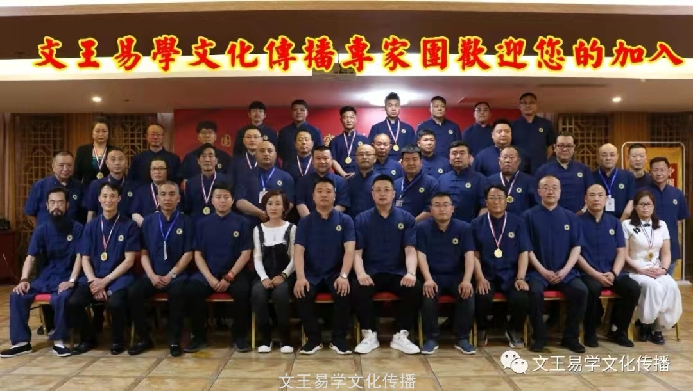

全国周易名人榜（2024年）

根据中国伏羲易学研究学会2024年度工作部署，总会秘书处携第三届常务理事会班子成员对全国周易学者进行了学术考评和网络调研，通过此次考评调研，评选出了当代全国学术最强、知名度最高的周易名人榜，入榜人员名单如下（排名顺序不分先后）：
001.邓迈 山东烟台
002.张少宇 山东临沂
003.林振兴 福建宁德
004.顾昌华 湖北黄冈
005.刘润平 新疆昌吉
006.缪乃章 安徽凤阳
007.林沿言 福建厦门
008.黄培照 广东廉江
009.陈义华 江西新余
010.陈麒安 福建厦门
011.泷云潇 天津市
012.陈奇绪 山东枣庄
013.姜红亮 山东海阳
014.刘乃境 广东广州
015.赵金良 辽宁喀左
016.罗 干 云南昆明
017.杨永顺 云南昆明
018.刘子铭 广东珠海
019.罗华林 浙江杭州
020.刘春仪 河北廊坊
021.刘艳芳 湖北武汉
022.毛孝卫 陕西西安
023.李荣林 云南昆明
024.李祥军 湖南澧县
025.赵乃旭 山东潍坊
026.焦万欣 河北唐山
027.林国良 福建永安
028.徐 伟 上海市
029.杨建烟 福建晋江
030.潘泮池 广东深圳
031.罗 俊 四川成都
032.伍香泉 四川南充
033.曾小军 甘肃定西
034.周子林 四川仁寿
035.谭长贵 江苏常州
036.周 政 北京市
037.刘继增 天津市
038.肖荣欢 深圳市
039.孙立峰 河南郑州
040.谢立波 贵州平塘
041.李栋梁 山东日照
042.王运金 江西铜鼓
043.袁焕博 山东济宁
044.石光庆 贵州平塘
045.顾兴甲 江苏高邮
046.赵新伟 山东日照
047.陈 进 江苏淮安
048.梁建明 重庆市
049.胡旭文 湖北黄冈
050.钱星安 云南玉溪
051.徐 伟 陕西汉中
052.周仁均 四川眉山
053.李 明 河北张家口
054.王浚骅 海南三亚
055.林辉文 福建漳浦
056.徐建鹏 山东招远
057.熊利军 广东深圳
058.谢 磊 山西忻州
059.付俊博 秦皇岛海港
060.王跃年 江苏淮涟水
061.蔡广标 安徽阜阳
062.段周命 湖南怀化
063.张建国 江苏常州
064.薛亦玉 福建福清
065.赵洪山 辽宁鞍山
066.姚行健 湖北随州
067.胡顺富 山东临沂
068.陆圣丰 云南昆明
069.宋禹辰 吉林省
070.陈柏谕 广东惠州
071.刘诚武 广东汕尾
072.胡雅晴 山东龙口
073.李雨渊 云南安宁
074.刘新年 吉林长春
075.龚发富 福建晋江
076.王守海 山东临沂
077.申益宁 天津市
078.廖林太 香港九龙
079.张秀才 吉林长春
080.孙立峰 河南郑州
081.张祝诚 广东深圳
082.吴海钦 广东深圳
083.张祝诚 广东深圳
084.于广金 黑龙江哈尔滨
085.贠永明 陕西西安
086.胡德文 黑龙江大庆
087.梅小功 河南驻马店
088.李连刚 黑龙江大庆
089.靳 松 吉林长春
090.徐建军 河北保定
091.王运金 江西宜春
092.薛叶前 福建福清
093.王跃年 江苏淮安
094.张聪哲 台湾台中
095.邓莉峰 广东清远
096.乔艳红 黑龙江绥化
097.范劲松 云南保山
098.张渭泉 北京东城
099.董沛瑜 河北廊坊
100.柏如意 江西鹰潭
101.刘添坤 福建龙岩
102.何志芳 福建泉州
103.徐 放 山东曲阜
104.孙一峰 吉林长春
105.吴必平 陕西旬阳
106.梁博洵 天津市
107.顾 煜 上海崇明
108.曾郁伦 广东深圳
109.林绍绿 浙江温州
110.聂 伟 四川成都
111.夏武世 安徽阜阳
112.张万里 安徽阜阳
113.常雪薇 黑龙江哈尔滨
114.刘文龙 黑龙江哈尔滨
115.李罗熙 黑龙江哈尔滨
116.贺自勇 河北邢台
117.李改生 吉林四平
118.郭晓妍 黑龙江哈尔滨
119.刘海川 黑龙江哈尔滨
120.徐 丹 辽宁沈阳
121.王路一 黑龙江哈尔滨
122.苏 贺 黑龙江哈尔滨
123.王玉灿 山东菏泽
124.李波涛 山东济南
125.张洪量 天津市
126.陈 进 江苏淮安
127.李彦悟 新疆昌吉
128.姜建刚 四川眉山
129.周仲养 浙江温州
130.程 辉 陕西西安
131.王力斌 湖南常德
132.王静思 黑龙江哈尔滨
133.侯 爽 黑龙江哈尔滨
134.张 浩 四川巴中
135.李福全 山东青州
136.温 建 辽宁鞍山
137.彭兴荣 四川遂宁
138.孙如强 黑龙江伊春
139.刘 爽 黑龙江大庆
140.胡法兴 广西邕州
141.刘舰墙 四川仁寿
142.刘立学 江苏沭阳
143.李海军 四川资阳
144.刘 彬 四川资阳
144.邹 统 福建福州
146.赵恩荣 山东济南
147.陈 亮 内蒙古赤峰
148.钟仕盛 广东广州
149.刘增来 辽宁营口
150.郎兆忠 辽宁沈阳
151.靳平忠 河南商丘
152.胡呈秀 黑龙江哈尔滨
153.陈国喜 福建福清
154.张佳茂 安徽芜湖
155.李晓静 新疆昌吉
156.余金良 黑龙江哈尔滨
157.郅 婧 黑龙江哈尔滨
158.赵本杰 江苏徐州
159.王雅丽 河南商丘
160.姚照鹏 河南南阳
161.张浩宇 河南商丘
162.巩 峰 湖北武汉
163.周 标 上海徐汇
164.秦凤俊 云南昆明
165.刘以志 山东潍坊
166.郑德树 四川双流
167.白云天 山东莒县
168.卢明雷 山东济宁
169.赵世芳 山东菏泽
170.于明清 山西大同
171.叶照全 广东深圳
172.张新春 江苏启东
173.袁 彬 重庆市
174.陈巍巍 河北衡水
175.王山乾 湖北武汉
176.李 丽 广东广州
177.张啟治 贵州遵义
178.马嘉诚 广东潮州
179.芮 晱 上海市
180.侯再华 四川成都
181.王 雪 黑龙江哈尔滨
182.郭聪丽 河北唐山
183.于洋 河北唐山
184.王永占 山东菏泽
185.李玖润 山东曹县
186.邓锋 陕西安康
187.李恩虎 江苏沭阳
188.关 飞 哈尔滨阿城
189.吕华山 江苏泰州
190.王光宇 贵州织金
191.马 磊 甘肃定西
192.何承远 江西赣州
193.廖正友 重庆璧山
194.陶明颖 湖南常德
195.周永富 内蒙古乌兰浩特
196.黄隆明 福建福州
197.段顺祥 安徽宿州
198.赵长贵 河北秦皇岛